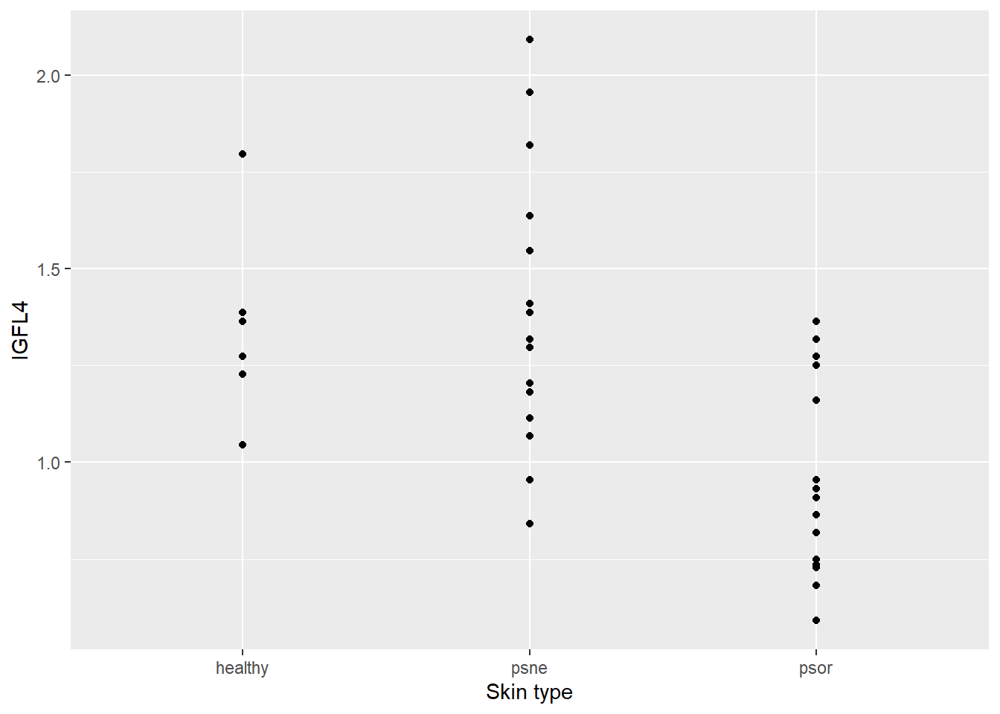
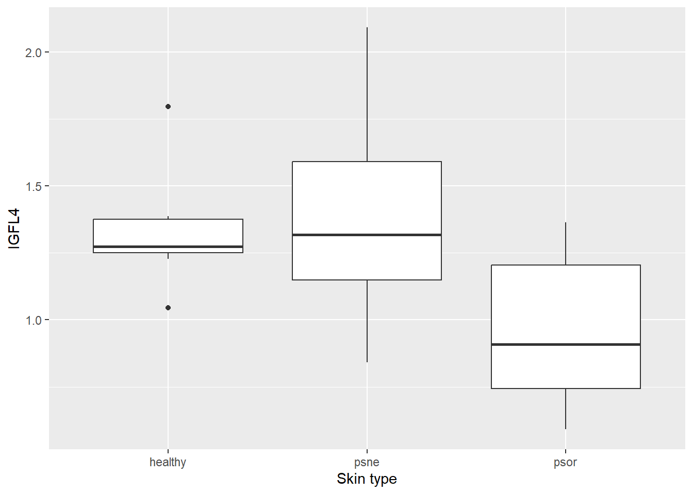

#install.packages("tidyverse")
#install.packages("readxl")
#install.packages("emmeans")
library(tidyverse)
library(readxl)
library(emmeans)Presentation 4: Applied Statistics in R - Solutions
You can download the presentation4_solutions.qmd file and explore it in your RStudio. Just clink on the file link, download from GitHub and open the file in your local RStudio.
## Structure of a biostatistical analysis in R
The very basic structure of an R script doing a classical statistical analysis is as follows:
- Load packages that you will be using.
- Read the dataset to be analyzed. Possibly also do some data cleaning and manipulation.
- Visualize the dataset by graphics and other descriptive statistics.
- Fit and validate a statistical model.
- Hypothesis testing. Possibly also post hoc testing.
Of course there are variants of this set-up, and in practice there will often be some iterations of the steps.
In this manuscript we will exemplify the proposed steps in the analysis of a simple dataset:
- In our current scenario, you are a researcher investigating psoriasis, an inflammatory skin disease. You have data on the expression of a number genes that are suspected to have something to do with the disease, but you cannot be sure until you perform some formal statistical analysis.
- This is a great example where R skills would come very handy!
- You will start with your gene of special interest IGFL4. IGFL4 belongs to the insulin-like growth factor family of signaling molecules that play critical roles in cellular energy metabolism as well as in growth and development.
- You decide that your analysis approach will be one-way ANOVA of the expression of the IGFL4 gene against the skin type in psoriasis patients as well as in healthy individuals.
Load packages
We will use ggplot2 to make plots, and to be prepared for data manipulations, we simply load this together with the rest of the tidyverse.
The psoriasis data are provided in an Excel sheet, so we also load readxl. Finally, we will use the package emmeans to make post hoc tests.
Remember that you should install the wanted packages before they can be used (but you only need to install the packages once!).
Thus,
Now, we are done preparing for our analyses. Next, we will look specifically at the possible association between IGFL4 gene expression and psoriasis. Finally, we conclude with a brief outlook on other statistical models in R.
Please refer to the ‘STATS CHEAT SHEET’ provided in the slides for hints as well as other cheat sheets provided in other sessions where necessary.
Example: Analysis of variance
Step 1: Data
Psoriasis is an immune-mediated disease that affects the skin. You, as a researcher, carried out a micro-array experiment with skin from 37 people in order to examine a potential association between the disease and a certain gene (IGFL4). For each of the 37 samples the gene expression was measured. Fifteen skin samples were from psoriasis patients and from a part of the body affected by the disease (psor); 15 samples were from psoriasis patients but from a part of the body not affected by the disease (psne); and 7 skin samples were from healthy individuals (healthy) included as healthy controls.
The data are saved in the file psoriasis.xlsx. At first the variable named type (i.e. skin sample type) is stored as a character variable, we change it to a factor (and check that indeed there are 15, 15 and 7 skin samples in the three groups).
# Read in the data from Excel file and call it psoriasisData
psoriasisData <- read_excel("../../Data/psoriasis.xlsx")
# View the top rows of the dataset
head(psoriasisData)# A tibble: 6 × 12
type IGFL4 GeneA GeneB GeneC GeneD GeneE GeneF GeneG GeneH GeneI GeneJ
<chr> <dbl> <dbl> <dbl> <dbl> <dbl> <dbl> <dbl> <dbl> <dbl> <dbl> <dbl>
1 psne 0.841 2.94 3.16 4.21 -0.476 4.20 0.335 5.20 0.167 2.00 4.62
2 psne 0.955 2.67 3.23 6.09 0.121 3.66 1.28 5.52 0.0580 2.06 4.35
3 psne 1.07 2.53 2.80 4.48 -0.165 3.90 1.18 5.40 -0.202 1.95 2.57
4 psne 1.11 3.56 2.53 4.97 0.139 2.92 0.744 4.98 -0.329 2.03 3.17
5 psne 1.18 3.48 2.79 4.74 -0.102 3.04 0.513 5.48 -0.116 2.04 3.61
6 psne 1.20 2.94 3.12 4.20 -0.200 3.46 0.472 3.95 -0.129 1.55 3.56# Extract the data of interest containing the IGFL4 expression levels and skin sample type from the dataset and call this subset psorData
psorData <- select(psoriasisData, type, IGFL4)
# View the top rows of the dataset psorData
head(psorData)# A tibble: 6 × 2
type IGFL4
<chr> <dbl>
1 psne 0.841
2 psne 0.955
3 psne 1.07
4 psne 1.11
5 psne 1.18
6 psne 1.20 # Just a bonus script in case you would like to select all data columns except for IGFL4
# psorDataG <- select(psoriasisData, -IGFL4)
# Change variable named 'type' to factor so that we can use in our analysis in the next steps
# First let's check if it is character
is.character(psorData$type)[1] TRUE# Now change to factor
psorData <- mutate(psorData, type = factor(type))
# Again, let's check if it is factor now
is.factor(psorData$type)[1] TRUE# Check that there are 15, 15 and 7 skin samples in the three groups. Hint: count()
count(psorData, type)# A tibble: 3 × 2
type n
<fct> <int>
1 healthy 7
2 psne 15
3 psor 15QUESTION 1: According to your count summary table, are there 15 (psor), 15 (psne) and 7 (healthy) skin samples in the three groups? Please share your answer here:
Step 2: Descriptive plots and statistics
To get an impression of the data, we make two plots, and compute group-wise means and standard deviations. Make (1) a plot showing three groups of skin samples (healthy, psne, psor) and IGFL4 expression levels from each skin sample so that we can visually compare each group of samples with regards to IGLF4 expression levels; (2) a boxplot for the same group-wise comparison. And finally, obtain the group-wise (healthy, psne, psor) descriptive statistics (mean, median and standard deviation). Hint: Consider using ggplot and tidyverse!
# (1) a plot showing three groups of skin samples (healthy, psne, psor) and IGFL4 expression levels from each skin sample
ggplot(psorData, aes(x=type, y=IGFL4)) +
geom_point() +
labs(x="Skin type", y="IGFL4")
# (2) a boxplot for the same group-wise comparison. Hint: geom_boxplot()
ggplot(psorData, aes(x=type, y=IGFL4)) +
geom_boxplot() +
labs(x="Skin type", y="IGFL4")
# And finally, obtain the group-wise (healthy, psne, psor) descriptive statistics (mean, median and standard deviation). Hint: group_by()
psorData %>%
group_by(type) %>%
summarise(avg=mean(IGFL4),
median=median(IGFL4),
sd=sd(IGFL4))# A tibble: 3 × 4
type avg median sd
<fct> <dbl> <dbl> <dbl>
1 healthy 1.34 1.27 0.230
2 psne 1.39 1.32 0.363
3 psor 0.955 0.909 0.255# Alternatively. Notice how the column names can be changed as seen above.
group_by(psorData, type) %>%
summarise(mean(IGFL4), median(IGFL4), sd(IGFL4))# A tibble: 3 × 4
type `mean(IGFL4)` `median(IGFL4)` `sd(IGFL4)`
<fct> <dbl> <dbl> <dbl>
1 healthy 1.34 1.27 0.230
2 psne 1.39 1.32 0.363
3 psor 0.955 0.909 0.255QUESTION 2: Please rank the three groups by their mean/average IGFL4 expression (descending order). Please share your answer here:
Step 3: Fit of oneway ANOVA
The scientific question is whether the gene expression level of IGFL4 differs across the three types/groups/categories. Thus, the natural type of analysis is a oneway analysis of variance (ANOVA). The oneway ANOVA is fitted with the lm() function in R. It is a good approach to assign a name (below oneway) to the object with the fitted model. This object contains all relevant information and may be used for subsequent analysis. Note that we need to logarithmic transform the response (i.e. IGFL4 expression levels) as intensities are often on a multiplicative scale.
# oneway analysis of variance (ANOVA)
oneway <- lm(log(IGFL4) ~ type, data=psorData)
# View the model coefficients
oneway
Call:
lm(formula = log(IGFL4) ~ type, data = psorData)
Coefficients:
(Intercept) typepsne typepsor
0.27910 0.01724 -0.35794 # The intercept in this model represents the mean value (on log scale) of IGFL4 expression for healthy individuals in the dataset.
# The coefficients represent the differences in the means for IGFL4 expression across skin type categories, [psne - healthy] and [psor - healthy], respectively.
# Hence, the coefficients are in comparison to the reference category (i.e. reference level). Here, 'healthy' by default. The default reference level order is based on alphabetical or numerical ordering. You can use the levels() function to find the reference level. It is always the first one listed in levels().
levels(psorData$type) [1] "healthy" "psne" "psor" # Thus we can say, on average, we expect IGFL4 expression to be 0.01724 more in the psne category than that in the healthy category. Similarly, on average, we expect IGFL4 expression to be 0.35794 less in the psor category than that in the healthy category.
# An extra step for demonstrating an additional and useful function - you can change the reference level of the categorical explanatory (i.e. independent) variable, in our case, skin type (variable 'type' in the model). In order to do that, you can use the relevel() function. Please see the example below.
# Make psor (psoriasis-affected skin sample from patients) the reference level
psorData_relevelpsor <- within(psorData, type <- relevel(type, ref = "psor"))
oneway_relevelpsor <- lm(log(IGFL4) ~ type, data=psorData_relevelpsor)
oneway_relevelpsor
Call:
lm(formula = log(IGFL4) ~ type, data = psorData_relevelpsor)
Coefficients:
(Intercept) typehealthy typepsne
-0.07884 0.35794 0.37518 # Now, 'psor' is the first category in levels.
levels(psorData_relevelpsor$type)[1] "psor" "healthy" "psne" # Make psne (psoriasis-unaffected skin sample from patients) the reference level
psorData_relevelpsne <- within(psorData, type <- relevel(type, ref = "psne"))
oneway_relevelpsne <- lm(log(IGFL4) ~ type, data=psorData_relevelpsne)
oneway_relevelpsne
Call:
lm(formula = log(IGFL4) ~ type, data = psorData_relevelpsne)
Coefficients:
(Intercept) typehealthy typepsor
0.29634 -0.01724 -0.37518 # Now, 'psor' is the first category in levels.
levels(psorData_relevelpsne$type)[1] "psne" "healthy" "psor" Step 4: Hypothesis test + Post hoc tests
It is standard to carry out an \(F\)-test for the overall effect of the explanatory (i.e. independent) variable. To be precise, the hypothesis is that the expected values are the same in all groups. The most easy way to do this test is to use drop1. The option test="F" is needed to get the \(F\)-test using that function.
# Carry out an $F$-test for the overall effect of the explanatory (i.e. independent) variable
drop1(oneway,test="F")Single term deletions
Model:
log(IGFL4) ~ type
Df Sum of Sq RSS AIC F value Pr(>F)
<none> 2.0924 -100.286
type 2 1.2204 3.3128 -87.286 9.9153 0.0004052 ***
---
Signif. codes: 0 '***' 0.001 '**' 0.01 '*' 0.05 '.' 0.1 ' ' 1QUESTION 3: What is your conclusion from the \(F\)-test result? Please share your answer here:
Thus, the overall test for homogeneity between the groups show that the groups are not all the same. But it might be that the gene expression in two of the three groups, say, are not significantly different. To investigate that we do post hoc testing. This is nicely done within the framework of estimated marginal means using the emmeans package. Here emmeans makes the estimated marginal means (that is the predicted gene expression IGFL4 on the log scale), and the pairs() command provide post hoc pairwise comparisons (package automatically adjusts for multiple comparisons using the default tukey method):
# Run emmeans
emmeans(oneway,~type) type emmean SE df lower.CL upper.CL
healthy 0.2791 0.0938 34 0.0885 0.4696
psne 0.2963 0.0641 34 0.1662 0.4265
psor -0.0788 0.0641 34 -0.2090 0.0513
Results are given on the log (not the response) scale.
Confidence level used: 0.95 # Perform post hoc pairwise comparisons
pairs(emmeans(oneway,~type)) contrast estimate SE df t.ratio p.value
healthy - psne -0.0172 0.1136 34 -0.152 0.9874
healthy - psor 0.3579 0.1136 34 3.152 0.0092
psne - psor 0.3752 0.0906 34 4.142 0.0006
Results are given on the log (not the response) scale.
P value adjustment: tukey method for comparing a family of 3 estimates QUESTION 4: What is your conclusion from the pairwise comparisons? Please share your answer here:
IGFL4 gene expression levels are not significantly different between healthy/control skin samples (healthy) and psoriasis-free patient skin samples (psne; healthy - psne; p-value > 0.05).
IGFL4 gene expression levels are significantly different between healthy/control skin samples (healthy), psoriasis-free patient skin samples (psne) and psoriasis-affected patient skin samples (psor; healthy - psor and psne - psor; both p-values < 0.05)
Outlook: Other analyses
The lm function is used for linear models, that is, models where data points are assumed to be independent with a Gaussian (i.e. normal) distribution (and typically also with the same variance). Obviously, these models are not always appropriate, and there exists functions for many, many more situations and data types. Here, we just mention a few functions corresponding to common data types and statistical problems.
glm: For independent, but non-Gaussian data. Examples are binary outcomes (logistic regression) and outcomes that are counts (Poisson regression). glm is short for generalized linear models, and theglmfunction is part of the base installation of R.lmerandglmer: For data with dependence structures that can be described by random effects, e.g., block designs. lme is short for linear mixed effects (Gaussian data), glmer is short for generalized linear mixed effects (binary or count data). Both functions are part of the lme4 package.nls: For non-linear regression, e.g., dose-response analysis. nls is short for non-linear least squares. The function is included in the base installation of R.
The functions mentioned above are used in a similar way as lm: a model is fitted with the function in question, and the model object subsequently examined with respect to model validation, estimation, computation of confidence limits, hypothesis tests, prediction, etc. with functions summary, confint, drop1, emmeans, pairs as mostly indicated above.